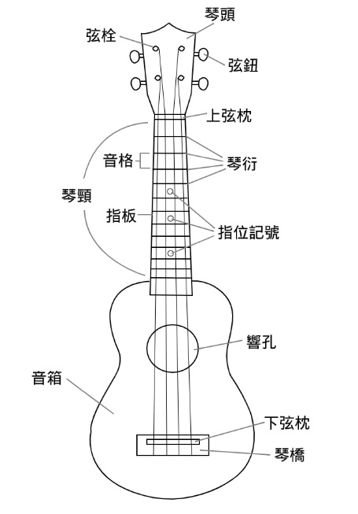

歷史
在很久很久以前 (老套開頭)
就是在 1879 年 8 月 23 日那天
有 419 位的葡萄牙移民在夏威夷上岸
在這當中還包含了專業的製琴師:
Manuel Nunes, Joao Fernandes, Augustine Dias
在航行超過四個月，約 15000 公里之後
Joao Fernandes 拿起家鄉的傳統樂器 (Braguinha)
開始高唱家鄉的傳統歌謠
當地的夏威夷人不但覺得這種琴音色優美
還對演奏者飛快的手指頭在指板上移動跳躍感到驚訝
簡直就像跳躍的跳蚤一樣
用當地語言把 跳躍的跳蚤 說出來，就是現在的烏克麗麗囉
還有另外一種說法是
Liliuokalani 女王 覺得這個樂器是葡萄牙人為當地帶來的禮物
用夏威夷話來說，UKU 是「禮物」，LELE 是「來」的意思
結合在一起就成為現在的 UKULELE 囉
種類
- Soprano (21吋)
- Concert (23吋)
- Tenor (26吋)
- Baritone (30吋)
Size 越大，音格數越多，能彈的音也越多
構造
- 琴頭 - 品牌 LOGO
- 弦鈕 & 弦栓 - 調整弦的鬆緊度與高低音
- 上弦枕 & 下弦枕 & 琴橋 - 把四條弦固定住
- 琴頸 - 很長的脖子
- 琴衍 - 金屬條
- 指板 & 音格 - 手指頭按的地方
- 指位記號 - 指版上的點點，快速辨識是在哪一格
- 音箱 & 響孔 - 聲音發出來的地方
